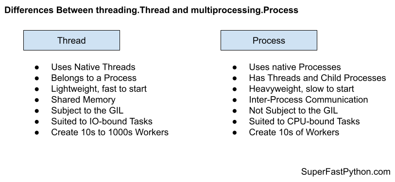

Thread vs Process in Python
Use multiprocessing for process-based concurrency and use threading for thread-based concurrency.
Use Threads for IO-bound tasks and use Processes for CPU-bound tasks.
In this tutorial you will discover the difference between the Thread and Process and when to use each in your Python projects.
Let's get started.
What Is a Thread
The threading.Thread class represents a thread of execution in Python.
There are two main ways to use a Thread; they are:
- Execute a target function in a new thread.
- Extend the Thread class and override run().
Run a Target Function in New Thread
The threading.Thread class can execute a target function in another thread.
This can be achieved by creating an instance of the threading.Thread class and specifying the target function to execute via the target keyword.
The thread can then be started by calling the start() function and it will execute the target function in another thread.
For example:
# a target function that does something
def work()
# do something...
# create a thread to execute the work() function
thread = Thread(target=work)
# start the thread
thread.start()
If the target function takes arguments, they can be specified via the args argument that takes a tuple or the kwargs argument that takes a dictionary.
For example:
...
# create a thread to execute the work() function
thread = Thread(target=work, args=(123,))The target task function is useful for executing one-off ad hoc tasks that probably don't interact with external state other than passed-in arguments and do not return a value
You can learn more about running functions in a new thread in the tutorial:
Extend the Thread Class
The threading.Thread class can be extended for tasks that may involve multiple functions and maintain state.
This can be achieved by extending the threading.Thread class and overriding the run() function. The overridden run() function is then executed when the start() function of the thread is called.
For example:
# define a custom thread
class CustomThread(threading.Thread):
# custom run function
def run():
# do something...
# create the custom thread
thread = CustomThread()
# start the thread
thread.start()
Overriding the threading.Thread class offers more flexibility than calling a target function. It allows the object to have multiple functions and to have object member variables for storing state.
Extending the threading.Thread class is suited for longer-lived tasks and perhaps services within an application.
You can learn more about extending the threading.Thread class in the tutorial:
Now that we are familiar with Thread, let's take a look at Process.
What Is a Process
The multiprocessing.Process class represents an instance of the Python interpreter for running code.
There are two main ways to use a Process; they are:
- Execute a target function in a new process.
- Extend the Process class and override run().
Run a Target Function in New Process
The multiprocessing.Process class can execute a target function in another process.
This can be achieved by creating an instance of the multiprocessing.Process class and specifying the target function to execute via the target keyword.
The process can then be started by calling the start() function and it will execute the target function in a new child process.
For example:
# a target function that does something
def work()
# do something...
# protect entry point
if __name__ == '__main__':
# create a process to execute the work() function
process = Process(target=work)
# start the process
process.start()
If the target function takes arguments, they can be specified via the args argument that takes a tuple or the kwargs argument that takes a dictionary.
For example:
...
# create a process to execute the work() function
process = Process(target=work, args=(123,))The target task function is useful for executing one-off ad hoc tasks that probably don't interact with external state other than passed-in arguments and do not return a value
You can learn more about running functions in a new process in the tutorial:
Extend the Process Class
The multiprocessing.Process class can be extended for tasks that may involve multiple functions and maintain state.
This can be achieved by extending the multiprocessing.Process class and overriding the run() function. The overridden run() function is then executed when the start() function of the process is called.
For example:
# define a custom process
class CustomProcess(multiprocessing.Process):
# custom run function
def run():
# do something...
# protect entry point
if __name__ == '__main__':
# create the custom process
process = CustomProcess()
# start the process
process.start()
Overriding the Process class offers more flexibility than calling a target function. It allows the object to have multiple functions and to have object member variables for storing state in the child process.
Extending the multiprocessing.Process class is suited for longer-lived tasks and perhaps services within an application.
You can learn more about extending the multiprocessing.Process class in the tutorial:
Now that we are familiar with the Thread and Process, let's compare and contrast each.
Comparison of Thread vs Process
Now that we are familiar with the Thread and Process classes, let's review their similarities and differences.
Similarities Between Thread and Process
The Thread and Process classes are very similar, let's review some of the most important similarities.
1. Both Classes Used For Concurrency
Both the threading.Thread class and the multiprocessing.Process classes are intended for concurrency.
There are whole classes of problems that require the use of concurrency, that is running code or performing tasks out of order.
Problems of these types can generally be addressed in Python using threads or processes, at least at a high-level.
2. Both Have The Same API
Both the threading.Thread class and the multiprocessing.Process classes have the same API.
Specifically when:
- Running a function in a new thread or process, e.g. the "target" argument on the class constructor.
- Extending the class and overriding the run() function.
- Starting a new thread or process via the start() function.
This was the intention by the module designers and this similarity carries over to other parts of the threading and multiprocessing modules.
3. Both Support The Same Concurrency Primitives
Both the threading.Thread class and the multiprocessing.Process classes support the same concurrency primitives.
Concurrency primitives are mechanisms for synchronizing and coordinating threads and processes.
Concurrency primitives with the same classes and same API are provided for use with both threads and processes, for example:
- Locks (mutex) with threading.Lock and multiprocessing.Lock.
- Recurrent Locks with threading.RLock and multiprocessing.RLock.
- Condition Variables with threading.Condition and multiprocessing.Condition.
- Semaphores with threading.Semaphore and multiprocessing.Semaphore.
- Event Objects with threading.Event and multiprocessing.Event.
- Barriers with threading.Barrier and multiprocessing.Barrier.
This allows the same concurrency design patterns to be used with either thread-based concurrency or process-based concurrency.
Differences Between Thread and Process
The Thread and Process are also quite different, let's review some of the most important differences.
1. Native Threads vs. Native Processes
Perhaps the most important difference is the functionality that underlies each.
The threading.Thread class represents a naive thread managed by the operating system. The multiprocessing.Process class represents a native process managed by the underlying operating system.
A process is a high-level of abstraction than a thread.
- A process has a main thread.
- A process may have additional threads.
- A process may have child processes.
Whereas a thread belongs to a process.
2. Shared Memory vs. Inter-Process Communication
The classes have important differences in the way they access shared state.
Threads can share memory within a process.
This means that functions executed in new threads can access the same data and state. These might be global variables or data shared via function arguments. As such, sharing state between threads is straightforward.
Processes do not have shared memory like threads.
Instead, state must be serialized and transmitted between processes, called inter-process communication. Although it occurs under the covers, it does impose limitations on what data and state can be shared and adds overhead to sharing data.
Typically sharing data between processes requires explicit mechanisms, such as the use of a multiprocessing.Pipe or a multiprocessing.Queue.
As such, sharing state between threads is easy and lightweight, and sharing state between processes is harder and heavyweight.
3. GIL vs. no GIL
Multiple threads are subject to the global interpreter lock (GIL), whereas multiple child processes are not subject to the GIL.
The GIL is a programming pattern in the reference Python interpreter (e.g. CPython, the version of Python you download from python.org).
It is a lock in the sense that it uses synchronization to ensure that only one thread of execution can execute instructions at a time within a Python process.
This means that although we may have multiple threads in our program, only one thread can execute at a time.
The GIL is used within each Python process, but not across processes. This means that multiple child processes can execute at the same time and are not subject to the GIL.
This has implications for the types of tasks best suited to each class.
Summary of Differences
It may help to summarize the differences between Thread and Process.
Thread
- Uses native threads, not a native process.
- Thread belongs to a process.
- Shared memory, not inter-process communication.
- Subject to the GIL, not true parallel execution.
- Suited to IO-bound tasks, not CPU bound tasks.
- Create 10s to 1,000s of threads, not really constrained.
Process
- Uses native processes, not native threads.
- Process has threads, and has child processes.
- Heavyweight and slower to start, not lightweight and fast to start.
- Inter-process communication, not shared memory.
- Suited to CPU-bound tasks, probably not IO-bound tasks.
- Create 10s of processes, not 100s or 1,000s of tasks.
The figure below provides a helpful side-by-side comparison of the key differences between Thread and Process.

When to Use Threads
The threading.Thread class is powerful and flexible, although is not suited for all situations where you need to run a computation-focused background task.
In this section, we'll look at broad classes of tasks and why they are or are not appropriate for the threads.
Use Threads for for IO-Bound
You should use the threading.Thread for IO-bound tasks in Python in general.
An IO-bound task is a type of task that involves reading from or writing to a device, file, or socket connection.
The operations involve input and output (IO), and the speed of these operations is bound by the device, hard drive, or network connection. This is why these tasks are referred to as IO-bound.
CPUs are really fast. Modern CPUs, like a 4GHz, can execute 4 billion instructions per second, and you likely have more than one CPU in your system.
Doing IO is very slow compared to the speed of CPUs.
Interacting with devices, reading and writing files, and socket connections involve calling instructions in your operating system (the kernel), which will wait for the operation to complete. If this operation is the main focus for your CPU, such as executing in the main thread of your Python program, then your CPU is going to wait many milliseconds, or even many seconds, doing nothing.
That is potentially billions of operations that it is prevented from executing.
We can free-up the CPU from IO-bound operations by performing IO-bound operations on another thread of execution. This allows the CPU to start the process and pass it off to the operating system (kernel) to do the waiting and free it up to execute in another application thread.
There's more to it under the covers, but this is the gist.
Therefore, the tasks we execute with a threading.Thread should be tasks that involve IO operations.
Examples include:
- Reading or writing a file from the hard drive.
- Reading or writing to standard output, input, or error (stdin, stdout, stderr).
- Printing a document.
- Downloading or uploading a file.
- Querying a server.
- Querying a database.
- Taking a photo or recording a video.
- And so much more.
If your task is not IO-bound, perhaps threads and using a thread pool is not appropriate.
Don't Use Threads for for for CPU-Bound Tasks
You should probably not use the threading.Thread for CPU-bound tasks in general.
A CPU-bound task is a type of task that involves performing a computation and does not involve IO.
CPUs are very fast, and we often have more than one CPU core on a single chip in modern computer systems. We would like to perform our tasks and make full use of multiple CPU cores in modern hardware.
Using threads via the threading.Thread class in Python is probably not a path toward achieving this end.
This is because of a technical reason behind the way the Python interpreter was implemented. The implementation prevents two Python operations executing at the same time inside the interpreter, and it does this with a master lock that only one thread can hold at a time called the global interpreter lock, or GIL.
The GIL is not evil and is not frustrating; it is a design decision in the Python interpreter that we must be aware of and consider in the design of our applications.
I said that you probably should not use threads for CPU-bound tasks.
You can and are free to do so, but your code will not benefit from concurrency because of the GIL. It will likely perform worse because of the additional overhead of context switching (the CPU jumping from one thread of execution to another) introduced by using threads.
Additionally, the GIL is a design decision that affects the reference implementation of Python. If you use a different implementation of the Python interpreter (such as PyPy, IronPython, Jython, and perhaps others), then you may not be subject to the GIL and can use threads for CPU bound tasks directly.
Now that we are familiar with the types of tasks suited to the threading.Thread, let's look at the types of tasks suited to the multiprocessing.Process specifically.
When to Use Processes
The multiprocessing.Process class is powerful and flexible, although is not suited for all situations where you need to run a background task.
In this section, we'll look at broad classes of tasks and why they are or are not appropriate for the processes.
Use the Processes for CPU-Bound Tasks
You should probably use processes for CPU-bound tasks.
A CPU-bound task is a type of task that involves performing a computation and does not involve IO.
The operations only involve data in main memory (RAM) or cache (CPU cache) and performing computations on or with that data. As such, the limit on these operations is the speed of the CPU. This is why we call them CPU-bound tasks.
Examples include:
- Calculating points in a fractal.
- Estimating Pi
- Factoring primes.
- Parsing HTML, JSON, etc. documents.
- Processing text.
- Running simulations.
CPUs are very fast, and we often have more than one CPU. We would like to perform our tasks and make full use of multiple CPU cores in modern hardware.
Using processes and process pools via the multiprocessing.Process class in Python is probably the best path toward achieving this end.
Don't Use Processes for IO-Bound Tasks
You can use processes for IO-bound tasks, although the threading.Thread class is likely a better fit.
An IO-bound task is a type of task that involves reading from or writing to a device, file, or socket connection.
Processes can be used for IO-bound tasks in the same way that threads can be, although there are major limitations to using processes.
- Processes are heavyweight structures; each has at least a main thread.
- All data sent between processes must be serialized.
- The operating system may impose limits on the number of processes you can create.
When performing IO-operations, we very likely will need to move data between worker processes back to the main process. This may be costly if there is a lot of data as the data must be pickled at one end and unpickled at the other end. Although this data serialization is performed automatically under the covers, it adds a computational expense to the task.
Additionally, the operating system may impose limits on the total number of processes supported by the operating system, or the total number of child processes that can be created by a process. For example, the limit in Windows is 61 child processes. When performing tasks with IO, we may require hundreds or even thousands of concurrent workers (e.g. each managing a network connection), and this may not be feasible or possible with processes.
Nevertheless, the multiprocessing.Process class may be appropriate for IO-bound tasks if the requirement on the number of concurrent tasks is modest (e.g. less than 100) and the data sharing requirements between processes is also modest (e.g. processes don't share much or any data).
Takeaways
You now know the difference between Thread and Process and when to use each.